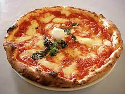

Pizza

Description
A savoury pie with an endless level of customization using various toppings.
- Tomato Sauce
- Mozzarella Cheese
- Pizza Dough
- Ground Beef (or another protein of your choice)
- Oil
- Sesame seeds
- Spinach
- Shape the dough into a circle with a rim slightly higher than the
inside of the pizza.
- Add an even layer of tomato sauce to the inside of the dough
- Add the toppings on top of the sauce.
- Bake the pizza until its done